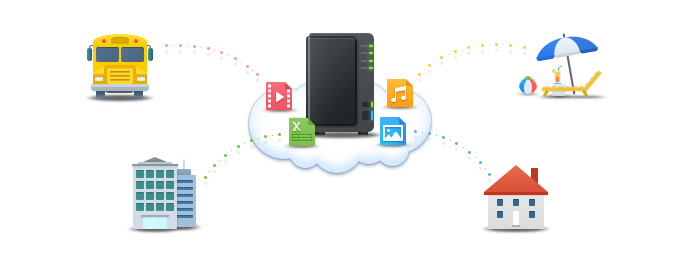
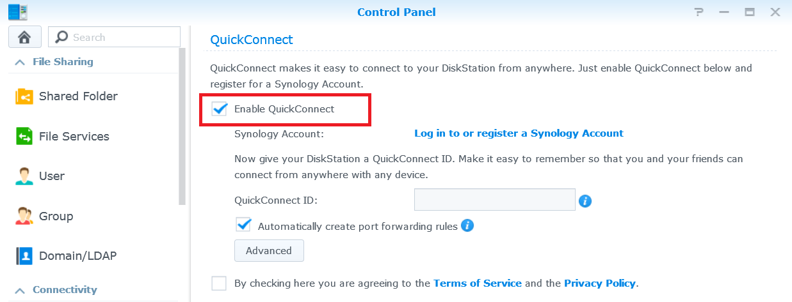
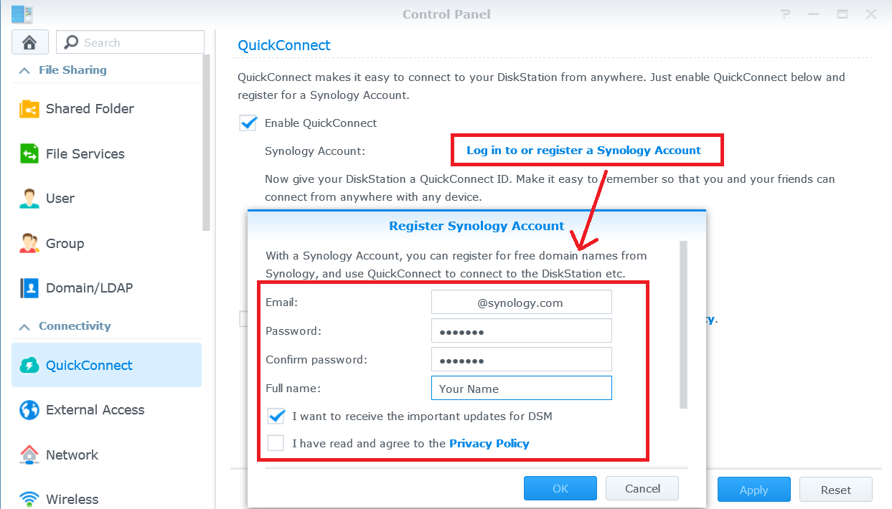
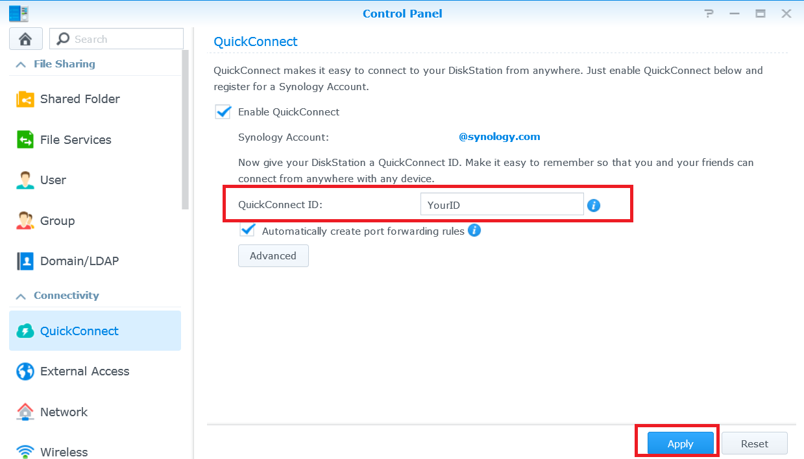
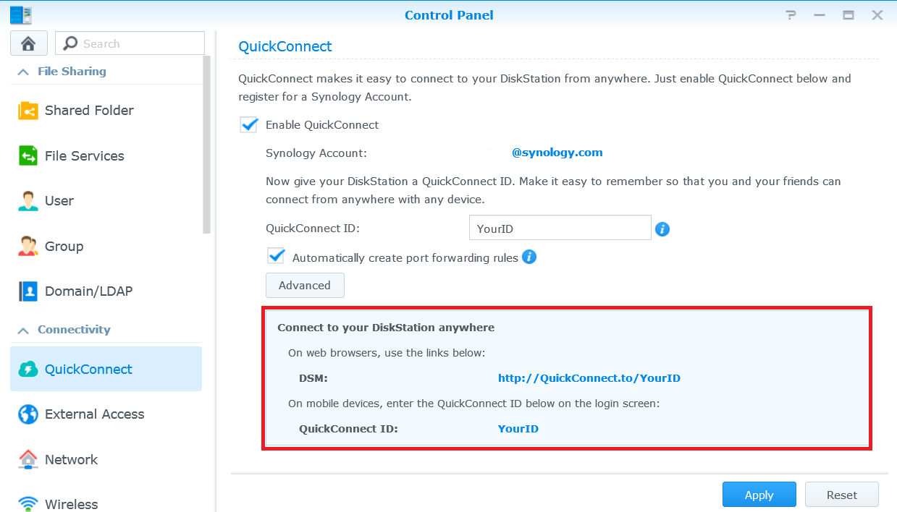
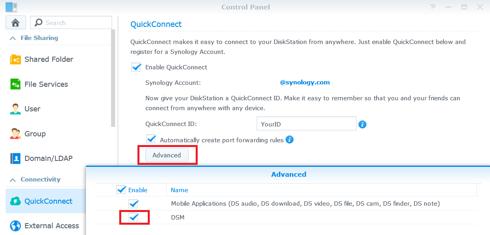
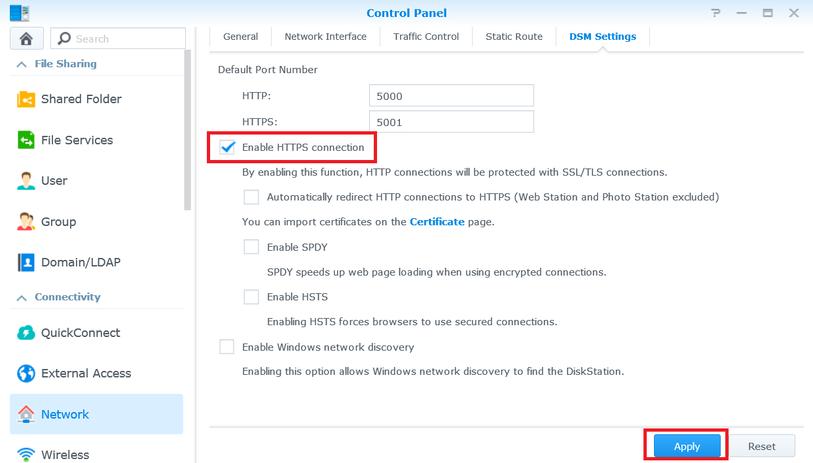
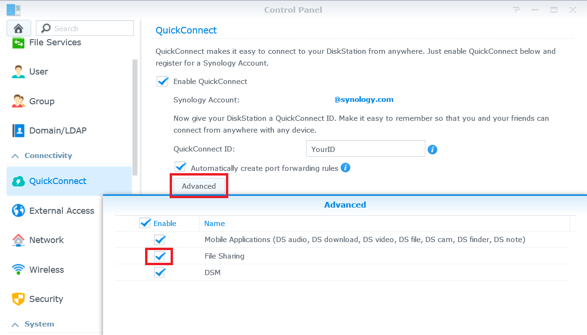
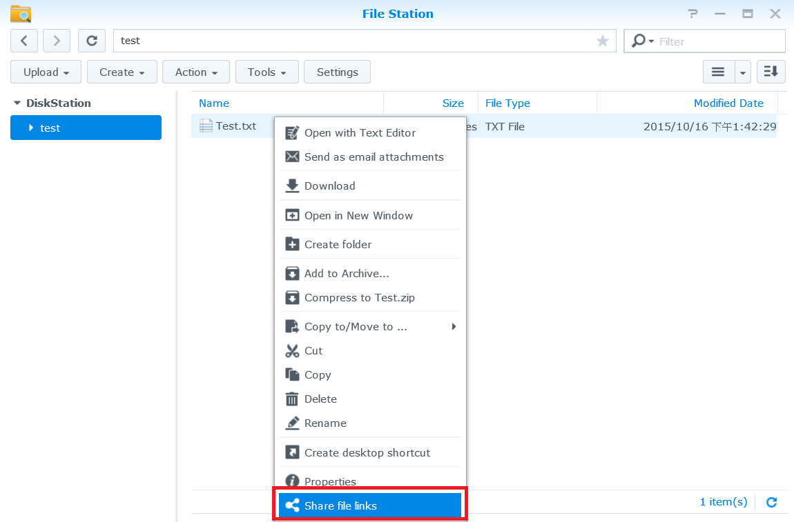
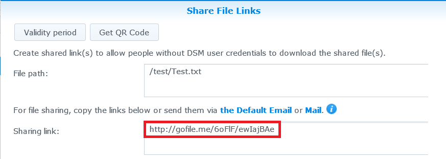

透過網際網路存取 Synology NAS 並分享檔案

概述
有了 QuickConnect，您便可以輕鬆透過網際網路存取您的 Synology NAS，無需另外設定連接埠轉送規則或進行其他複雜的網路設定。 QuickConnect 讓您可以自訂簡短的網址來連接，像是 Quickconnect.to/example。
1. 設定 QuickConnect
- 請前往控制台 > QuickConnect。
- 勾選啟動 QuickConnect 核取方塊。

- 若您沒有 Synology 帳戶，請按一下登入或是註冊 Synology 帳戶。 輸入必填的資訊，然後按一下確定。 如果您已經有 Synology 帳戶，請輸入您的帳號和密碼。

- 在 QuickConnect ID 欄位中輸入想要的 QuickConnect ID。 然後按一下套用。

- 您的 QuickConnect 連結資訊將會顯示。 您可以使用這些連結來存取 Synology NAS。 在本範例中，存取 DSM 的位址為 http://Quickconnect.to/YourID。

- 若沒有顯示 DSM 的 QuickConncet 連結，您可以按一下進階設定來確認您已啟動 DSM。

- 接著您就可以使用連結到 DSM 的 QuickConnect 網址來存取您的 Synology NAS。

2. 使用 QuickConnect 分享 NAS 上的檔案
啟動 QuickConnect 後，您就可以將儲存於 Synology NAS 上的檔案輕鬆地分享給任何人，無須擔心連接埠轉接的問題。
- 首先，啟動 HTTPS 連線，以便於分享檔案時確保網路安全。 請前往控制台 > 網路。
- 勾選啟動 HTTPS 安全連線核取方塊並按一下套用。

- 接著為 QuickConnect 啟用檔案分享功能。 請前往控制台 > QuickConnect。
- 按一下進階設定，並確認已勾選檔案分享的核取方塊。

注意:
調整 QuickConnect 進階設定時，建議使用您的 Synology NAS 的 IP 位址或網域名稱登入。
- 您就可以開始用 QuickConnect 分享檔案了。 開啟 File Station，然後在您要分享的檔案或資料夾上按一下滑鼠右鍵。 然後在快顯功能表中按一下分享檔案連結。

- 檔案分享連結將自動產生。 只要將這個連結分享給親朋好友，他們就能下載分享的資料夾 / 檔案了。
